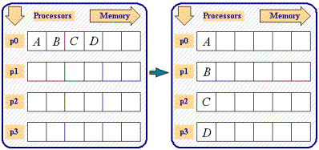
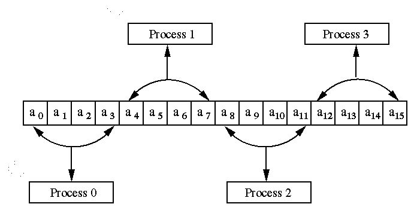
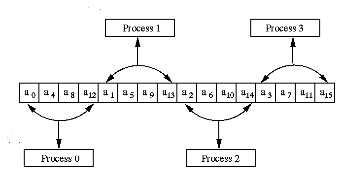
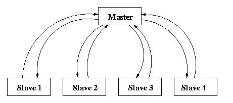
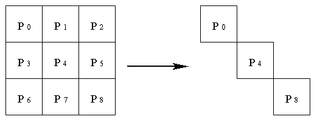

hyPACK-2013 Mode 1 : Parallel Programming Using MPI C++ Library Calls
|
Example programs using MPI-1X & C++ language include numerical integration, Vector into Vector,
matrix vector and Matrix into Matrix
multiplication using different decomposition techniques.
|
|
|
Example 2.1
|
Write MPI C++ program to find sum of n integers using MPI collective communication and computation library calls
|
Example 2.2
|
Write MPI C++ program to scatter n integers on p processes (Assume that n is divisible by p )
|
Example 2.3
|
Write MPI C++ program to compute value of PI
by Numerical Integration using MPI collective communication library calls .
|
Example 2.4
|
Write MPI C++ program to compute dot product of two vectors
using block-striped partitioning with uniform data distribution
|
Example 2.5
|
Write MPI C++ program to compute dot product of two vectors
using block-striped partitioning with non-uniform data distribution
|
Example 2.6
|
Write MPI C++ program to compute dot product of
two vectors using block -striped partitioning with cyclic data distribution
|
Example 2.7
|
Write MPI C++ program to compute the Matrix and Vector Multiplication
using self-scheduling algorithm.
|
Example 2.8
|
Write MPI C++ program to create a communicator consisting of processors
that lie on the diagonal in the square grid of processors, arranged in the form of a matrix.
|
|
Description of Programs - MPI Collecive Comm. & Comp. Lib. Calls
|
Example 2.1:
|
Write MPI C++ program to find sum of n integers using MPI collective communication and computation library calls
(Download source code :
mpicpp-reduce.C )
|
-
Objective
MPI program to find sum of n integers using MPI collective communication and computation
library calls.
- Description
MPI collective communication and computation library call, MPI::COMM_WORLD.Reduce is used.
- Input
For input data, let each process use its identifying number, i.e. the value of
its rank. For example, process with rank 0 uses the input intger r 0, process
with rank 1 uses the input integer number 1, etc.
- Output
Process wih rank 0 prints the final sum.
|
Example 2.2:
|
Write MPI C++ program for implementation of MPI program to scatter n integers
using MPI collective communication library calls
(Download source code :
mpicpp-scatter.C )
|
-
Objective
Write a MPI program to scatter an integer array A of dimension n on
p processors of Multi Core System MPI::COMM_WORLD.Scatter communication
library calls.
- Description
Assume thatn is multiple of p and index of the array A starts
from 0 (as in C-Program). Processor with rank k, k = 0,1, ..., p-1
gets n/p values starting from A[i], i = k*n/p to
(k+1)*n/p - 1.

Figure 1 Process p0 performing MPI::COMM_WORLD.Scatter Collective Communication Primitive
- Input
Process with rank 0 reads the input data.You have to adhere strictly the following format for the input file.
#Line 1 : Size of the array
#Line 2 : data in order, this means that the data of second entry of the input
array A follows the
first and so on.
24
2 10 3 4 23 14 4 6 8 32 63 86
12 8 3 9 13 4 14 16 18 2 9 86
- Output
Each process prints its own n/p elements of array A.
|
Example 2.3:
|
Write MPI C++ program to compute value of PI by Numerical Integration using MPI collective
communication library calls .
(Download source code :
mpicpp-pie-Collective.C )
|
- Objective
Write a MPI program to compute the value of pi function by numerical integration of
a function f(x) = 4/(1+x 2 ) between the limits 0 and 1.
- Description
There are several approaches to parallelizing a serial program. One approach is
to partition the data among the processes. That is we partition the interval of
integration [0,1] among the processes, and each process estimates local integral over
its own subinterval. The local calculations produced by the individual
processes are combined to produce the final result. Each process sends its integral to process 0,
which adds them and prints the result.
To perform this integration numerically, divide the interval from 0 to 1 into n
subintervals and add up the areas of the rectangles as shown in the Figure 2 (n
= 5). Large values of n give more accurate approximations of pi
. Use MPI Collective communication library calls.

Figure 2 Numerical integration of pie function
We assume that n is total number of subintervals, p is the number
of processes and p < n. One simple way to distribute the total
number of subintervals to each process is to dividen by p. There
are two kinds of mappings that balance the load. One is a block mapping,
partitions the array elements into blocks of consecutive entries and assigns
the block to the processes. The other mapping is a cyclic mapping. It
assigns the first element to the first process, the second element to the
second, and so on. If n > p, we get back to the first process,
and repeat the assignment process for remaining elements. This process is
repeated until all the elements are assigned. We have used a cyclic mapping
for partition of interval [0,1] ontop processes.
- Input
Process with rank 0 reads the input parameter n, the number of
intervals as commandline arguement
- Output
Process with rank 0 prints the computed value of pi function.

|
Example 2.4:
|
Write MPI C++ program to compute dot product of two vectors using block-striped partitioning with uniform data distribution .
(Download source code :
mpicpp-vv-mult-blkstp-unf.C )
|
- Objective
MPI program to compute dot product of two vectors using block-striped partitioning with uniform data distribution
-
Description
The partitioning is called block-striped if each process is assigned
contiguous elements. The process P0 gets the first n/p
elements, P1 gets the next n/p elements and so
on. The distribution of 16 elements of vector a on 4 processes
is shown in Figure 3.

Figure 3 : A Typical block-striped partitioning of a vector
of size 16 on 4 processes
Initially process with rank 0 distributes the input vectors using
MPI::COMM_WORLD.ReduceScatter on p processes. Each process will perform local
dot product of the vectors and accumulate the partial dot product. Now
the process with rank 0 performs global reduction using MPI::COMM_WORLD.Reduce
to get the final dot product.
-
Input
Process with rank 0 reads a real vectors of size n. Assume
that the number of elements n are greater than or equal to number
of processes p.
- Output
Process with rank 0 prints the final dot product of two
vectors. The dot product for the sample input vectors is given below.
204.0
|
Example 2.5:
|
Write MPI C++ program to compute dot product of two vectors using block-striped partitioning with non-uniform data distribution .
(Download source code :
mpicpp-vv-mult-blkstp-nonunf.C )
)
|
- Objective
MPI program to compute dot product of two vectors using block-striped
partitioning with non-uniform data distribution .
-
Description
If p divides n evenly, processes P0 gets the
first n/p elements, P1 the next n/p
elements and so on. If p does not divide n evenly, and
r be the remainder, then first r processes get (n/p)+1
elements and remaining p-r processes get n/p elements.
The program described in Example 13 uses MPI::COMM_WORLD.Scatter
and MPI::COMM_WORLD.Reduce
because the vector is equally distributed on p processes. Here,
we use MPI::COMM_WORLD.Scatterv call, which distributes the vectors non-uniformly
on all processes.
-
Input
Process with rank 0 reads a real vectors of size n. Assume
that the number of elements n are greater than or equal to number
of processes p.
-
Output
Process with rank 0 prints the final dot product of two
vectors. The dot product for the sample input vectors is given below.
204.0
|
Example 2.6:
|
Write MPI C++ program to compute dot product of two vectors using block -striped
partitioning with cyclic data distribution.
(Download source code :
mpicpp-vv-mult-blk-cyclic.C )
)
|
-
Objective
MPI program to compute dot product of two vectors using block -striped partitioning with cyclic data
distribution
-
Description
In the Cyclic data partitioning process P0 gets
the first element, process P1 gets the next and so on. The
process Pp-1 gets (p-1)th element.
If the number of elements n is more than the number processes p,
then process P0 gets pth element,
process P1 gets (p+1)th element and so on.
The process is repeated till all the elements are assigned. If n
is not a multiple of p, then first r (r = n/p)
processes will get n/p +1 elements and remaining p-r
processes will get n/p elements, in cyclic fashion.
The Figure 4 illustrates the example for p = 4 and n
= 16.

Figure 4 A Typical Cyclic data partitioning of a vector
of size 16 on 4 processes
-
Input
Process with rank 0 reads a real vectors of size n. Assume
that the number of elements n are greater than or equal to number
of processes p.
-
Output
Process with rank 0 prints the final dot product of two vectors
|
- Objective
MPI program to compute the Matrix and Vector Multiplication using self-scheduling algorithm.
- Description
This example illustrates , one of the most common parallel algorithm
prototype , the Self-Scheduling or Master-Slave algorithm.
This example is chosen not because it illustrates the best way to parallelize
this particular numerical computation (it doesn't), but it illustrates
the basic MPI send and MPI receive
operations in the context of fundamental type of parallel algorithm
applicable in many situations.

Figure 5 Communication pattern among master and
slaves in self scheduling paradigm.
We assume that the matrix A of size n x n
is available with master process of rank 0 and the vector x
of size n is available on all the slave processes , whose
rank start from 1 onwards .The idea is that one process, which we call
the master process, distributes the work load to slave
processes. When the slave finishes its workload, it informs the master
which assigns a new workload to the slave. This communication between
the master and slave is shown in Figure 5. This is very
simple paradigm where the co-ordination is done by master. Here,
the slave processes do not have to communicate with one another.
The master begins by broadcasting vector x to each slave.
It then sends one row of the matrix A to each slave .
At this point, the master begins a loop, terminated when it has received
all of the entries in the product. The body of the loop consists of receiving
one entry in the product vector from any slave , and sending the
next task (row of matrix A) to that slave. In
other words, completion of one task by a slave is considered to
be a request for the next task. Once all the tasks have been handed out,
termination messages are sent.
After receiving the broadcast value of vector x , each slave
also enters in a loop to compute the product of a matrix row with vector.
Each slave computation is terminated by the receipt of the termination
message from master. The body of the loop consists of receiving
a row of matrix A, performing the dot product with
vector x, and sending the answer back to the master.
-
Input
The input should be in following format.
Assume that the real matrix is of size m x n
and the real vector is of size n . Also the number of rows
m should be greater than or equal to number of processes p.
Process with rank 0 reads the input matrix A and the
vector x. Format for the input files are given below.
Input file 1
The input file for the matrix should strictly adhere to the following
format.
#Line 1 : Number of Rows (m), Number of columns (n)and
vector size.
#Line 2 : (data) (in row-major order. This means
that the data of second row follows that of the first and so on.)
#Last Line : Vector elements.
A sample input file for the matrix (8 x 8) is given below
8 8 8
1.0 2.0 3.0
4.0 2.0 3.0
2.0 1.0
2.0 3.0 4.0
2.0 3.0 2.0
1.0 1.0
3.0 4.0 2.0
3.0 2.0 1.0
1.0 1.0
4.0 2.0 3.0
2.0 1.0 1.0
4.0 2.0
2.0 3.0 2.0
1.0 2.0 3.0
2.0 2.0
3.0 2.0 1.0
1.0 2.0 1.0
1.0 1.0
2.0 1.0 4.0
3.0 2.0 1.0
3.0 3.0
4.0 1.0 2.0
1.0 2.0 3.0
4.0 3.0
- Output
Process with rank 0 prints the final matrix vector product result is
given below.
18.0 18.0 17.0 19.0 17.0 12.0
19.0 20.0
|
Example 2.8:
|
Write MPI C++ program to create a communicator consisting of processors that lie on the diagonal in the square grid of processors, arranged in the form of a matrix.
(Download source code :
mpicpp-diag-comm.C )
|
-
Objective
MPI program to create a communicator consisting of processors that lie on the diagonal in the
square grid of processors, arranged in the form of a matrix.
-
Description
Assume that the number of processors is a perfect square. The processors
in the processor grid are numbered in row-wise fashion. An example of a
square grid of processors (p = 9) is described in Figure 6. Diagonal
communicator consists of diagonal processors in the square processor grid.

Figure 6 Communicator consists of diagonal processors in a 3 x 3 square processor grid
The processors (P0,P4,P8) along the
diagonal form a diagonal communicator as shown in Figure 6. The ranks
of the processors in the diagonal communicator will be (0,1,2). Use special
( Comm::Get_group, Group::Incl, and Intracomm::Create ) MPI
library calls.
- Input
Communicator consisting of all the processors
- Output
Every Process prints its new rank in the diagonal group formed.
|
| |
|